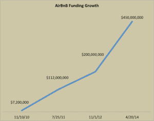

Quintus can be found at qcurtius.com. He is the author of the books On Duties, Thirty Seven, Sallust: The Conspiracy Of Catiline And The War Of Jugurtha, and other books. His work has been reviewed at Taki's Magazine. He can be followed on Twitter


The explosive growth of Airbnb has been impressive, to say the least. Like many “platform” businesses, it was initially created out of necessity. It all started in 2007, when two designers, Joe Gebbia and Brian Chesky, began to have problems making the rent payments on their San Francisco apartment. They thought they could turn their loft into a “rental space,” but felt that existing platforms like Craigslist were not the right way to advertise the space.
The best solution, they felt, was to set up a special website just to handle temporary rentals. This turned out to be an inspired move. Visionary business ideas often seem “obvious” in retrospect, but they are anything but this at the time.

Gebbia and Chesky set up their website, added photos of the rental space, and got the word out there. The space rented instantly, and in a city like San Francisco where hotel space is limited, the word spread fast. Soon they were getting emails from people all over the world asking when they could rent their space too. This was when they realized that they had stumbed on a gold mine. Seven years later (2014), Airbnb.com had over 550,000 properties listed, 10 million guests, and a valuation of around 10 billion dollars. Chesky and Gebbia no longer have problems making their rent.
Some of you may be frequent users of the site. Some may have never used it at all. I started using it a few years ago during my frequent visits to a certain Brazilian city. I got tired of dealing with the rather insulting restrictions that some hotels in the city would mandate regarding guests and visitors. I also wanted the option of having more privacy than a traditional hotel might allow.
I had a few friends who said good things about the site, so I gave it a try. It turned out to be a great decision. This might be a good time to offer my thoughts on how to make your Airbnb experience a good one. If you can follow these tips, you’ll be well on your way.
Airbnb gives the apartment owners some leeway in what they can do. Make sure you check out all the details, and then re-check them. Is the bathroom shared or not? Is there a security deposit required? Is there wifi access? Will you have to pay extra for certain things? I once made the mistake of not seeing that one host had a policy of charging extra for electricity usage during the stay.
You want there to be a record of your communication with the owner of the property. If something goes wrong, the Airbnb people will be able to see all of the dialogue. When it comes to disputes, he who keeps the best records usually wins.
There is no contradiction between this and the previous point. Always have a backup option for communication. If you get off a plane and are tired and disoriented, you want to be able to call your host if some problem occurs.
This is critical. How can you tell if a host will be a problem? You will get a sense for it over time. Unreasonable hosts generally will have too many requirements, will make too many demands, and will just not “feel” right.
Some like to play “hide the ball” and not disclose things overtly. One prospective host, for example, wanted to know the names and ID numbers of any guest that would come to my room. That is not reasonable. Another host wanted to charge extra for electricity. That is also not reasonable (in my opinion).
Remember, when you reserve that room with your credit card, you are committed. So, before you actually book the room, make sure you communicate with the host. Doing so will enable you to sniff out whether he or she is a dunce. The minute you get the feeling that the host is a dunce, move on. Trust me, you’ll thank yourself.
Do I really need to tell you this in 2016? Just making sure, guys.
And ask that he or she reciprocates and does the same for you. You want to build up some credibility on the site, and nothing does that better than peer reviews.
Google the number and take it with you. The customer service has come a long way in recent years. They used to just toss you back to the host and tell you to resolve it with them. Not any more. Perhaps because of some recent bad publicity from a couple unfortunate incidents (which I need not relate here), Airbnb has done a great job of having a real customer service department. I had a great experience with them the one time I had to cancel a reservation. They were prompt, responsive, and professional.
If you are communicating in a foreign language, keep things short and simple. Repeat key points when needed. That will reduce the chances of misunderstandings. You don’t want your host to misread something important, so make your sentences clear, short, and free of any slang or idiom.
Remember that this is someone’s property. Don’t disrespect it. Clean it up before you go, and treat the property with care. You get the idea.
This will be listed right on the host’s page. Some hosts have strict policies on cancellation, and others are more lenient. Strict policies are going to be just that: once you’re booked, you are financially committed. Be warned.
Like anything in life, Airbnb is not perfect. Like the decision whether to use Uber or hire a cab, there are going to be trade-offs both ways. But it’s clear that Airbnb is here to stay, and for me, the pros far outweigh the cons.
Read More: How American Football Became A Racket